Ogni contributo verifica fonti primarie e indica cosa cambia per il destinatario. Mai marketing, mai pareri travestiti.
Si torna a parlare di affiancamento tra lavoratore in rientro dal congedo e sostituto assunto a termine. La misura, che prevederebbe l'estensione del contratto e forme di incentivo…
Con l'aumento delle ondate di calore, il rischio microclimatico è entrato stabilmente tra le priorità dell'Ispettorato nazionale del lavoro. Secondo quanto risulterebbe da una rece…
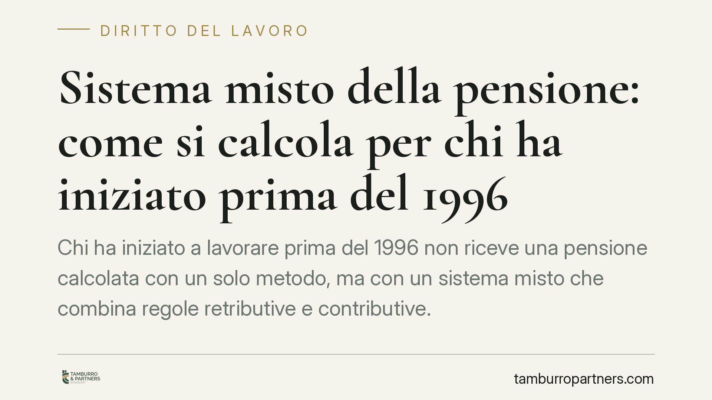
Chi ha iniziato a lavorare prima del 1996 non riceve una pensione calcolata con un solo metodo, ma con un sistema misto che combina regole retributive e contributive. Capire come s…
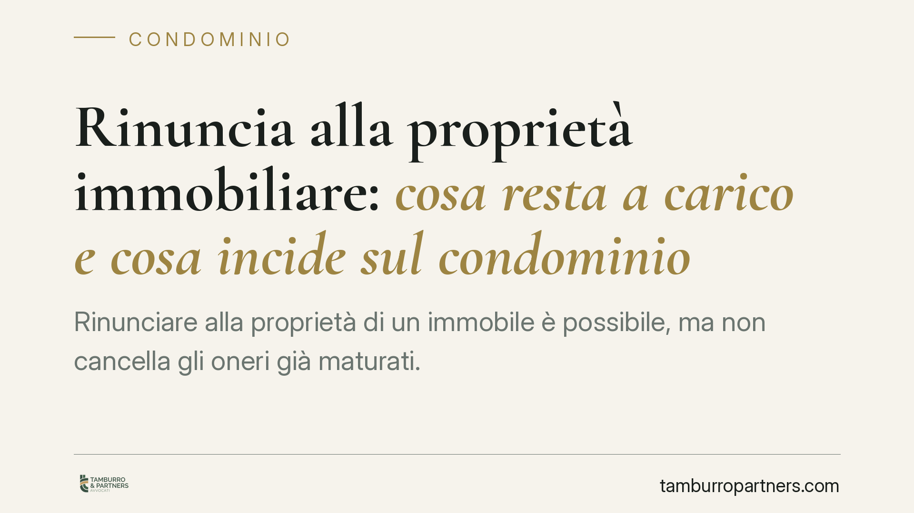
Rinunciare alla proprietà di un immobile è possibile, ma non cancella gli oneri già maturati. La distinzione tra dismissione futura e debiti pregressi è decisiva, soprattutto in co…
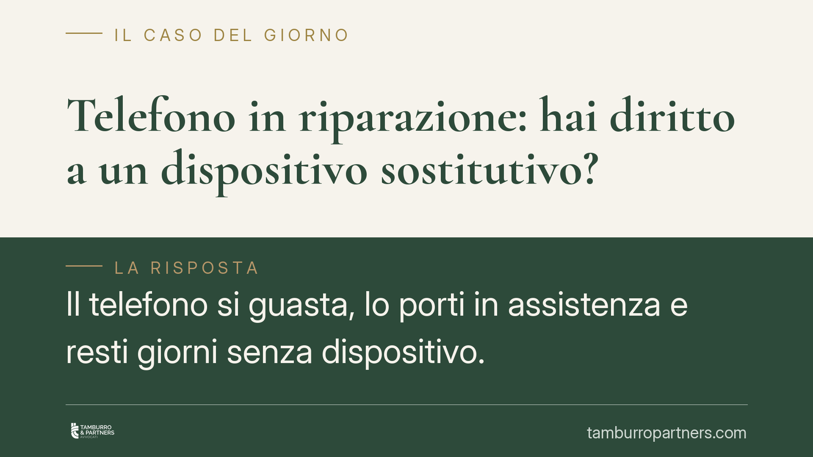
Quando il telefono resta in riparazione per settimane, la domanda è quasi automatica: il negozio è obbligato a fornirmi un dispositivo sostitutivo? La risposta non è secca. Il Codi…
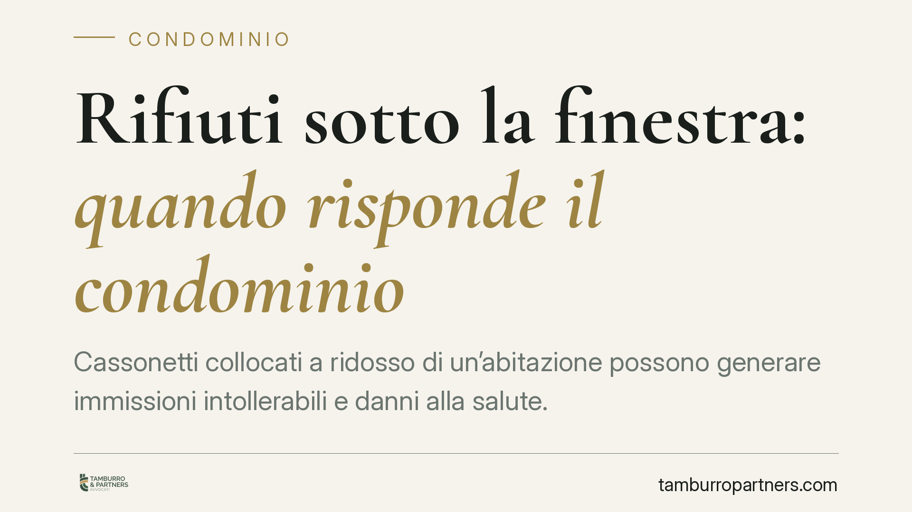
Cassonetti collocati a ridosso di un'abitazione possono generare immissioni intollerabili e danni alla salute. Una recente pronuncia della Corte d'appello di Firenze ha riconosciut…
Il condominio non può vietare gli animali domestici con una semplice delibera assembleare: lo esclude l'art. 1138, ultimo comma, cod. civ. Il divieto sopravvive solo se contenuto i…
Un contratto bancario resta valido anche se il cliente non riceve una copia firmata da entrambe le parti. La forma scritta è richiesta a pena di nullità, ma la Cassazione chiarisce…
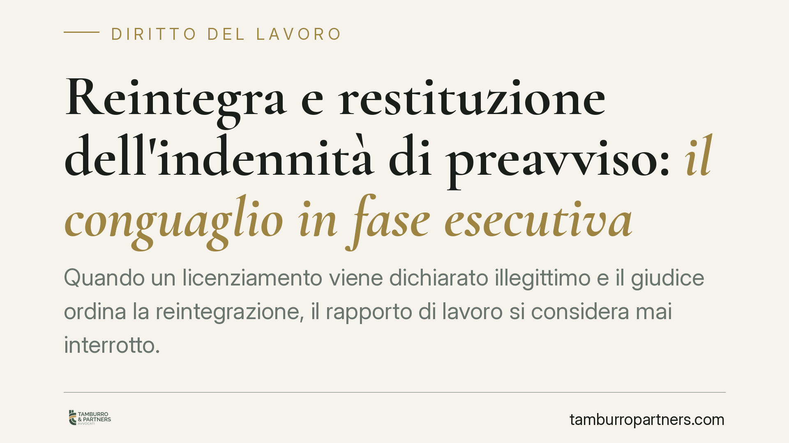
Quando un licenziamento viene dichiarato illegittimo e il giudice ordina la reintegrazione, il rapporto di lavoro si considera mai interrotto. Ne discende un tema pratico spesso so…
Con la sentenza n. 22774 del 6 luglio 2026, la Corte di Cassazione ribadisce un principio spesso trascurato: le infezioni virali non rientrano nella nozione contrattuale di infortu…
Molti lavoratori si chiedono se il datore possa imporre un controllo antidroga senza preavviso. La risposta dipende dalla mansione: esistono procedure rigorose per le attività a ri…
La Corte di Cassazione precisa un principio rilevante nella compravendita immobiliare: la presenza di un difetto visibile non fa decadere automaticamente la garanzia se quel difett…
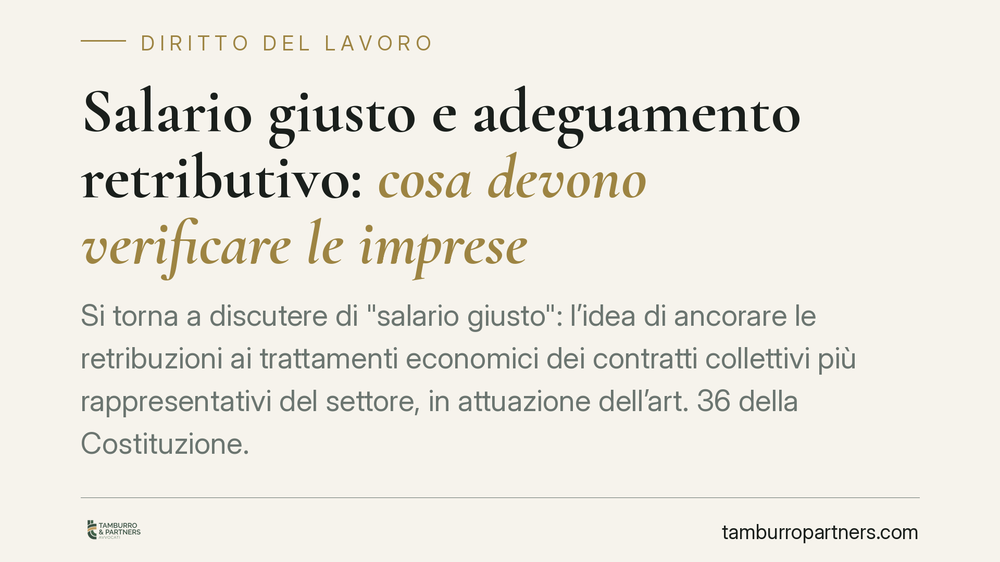
Si torna a discutere di "salario giusto": l'idea di ancorare le retribuzioni ai trattamenti economici dei contratti collettivi più rappresentativi del settore, in attuazione dell'a…
Ampliare la propria unità appoggiandosi al muro comune è tema ricorrente nei condomìni. La giurisprudenza distingue tra appoggio e incorporazione della struttura: dal confine tra q…
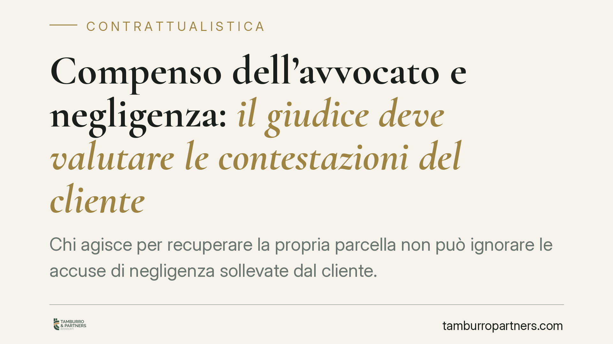
Chi agisce per recuperare la propria parcella non può ignorare le accuse di negligenza sollevate dal cliente. La Cassazione ha ribadito che il giudice deve esaminare in modo dirett…
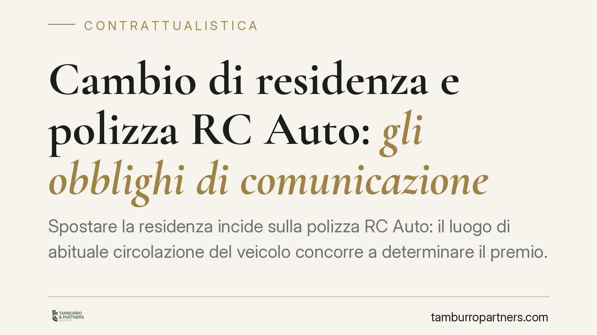
Spostare la residenza incide sulla polizza RC Auto: il luogo di abituale circolazione del veicolo concorre a determinare il premio. Non comunicare la variazione può esporre l'assic…
La regolarità contributiva ottenuta attraverso un piano di rateizzazione dei debiti verso INPS e INAIL non è una regolarità di serie B. Il DURC così rilasciato è pienamente valido …
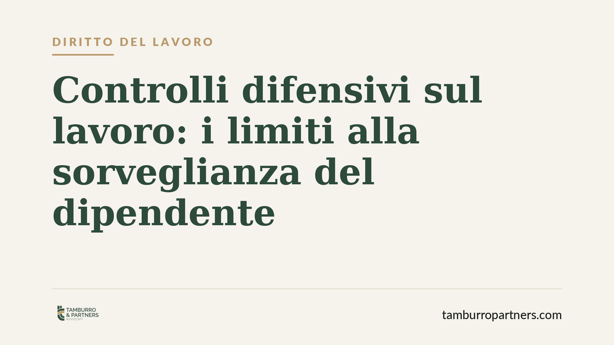
La giurisprudenza di legittimità torna a delimitare i controlli difensivi del datore di lavoro. GPS o investigatori privati attivati senza un fondato sospetto già maturato rendono …
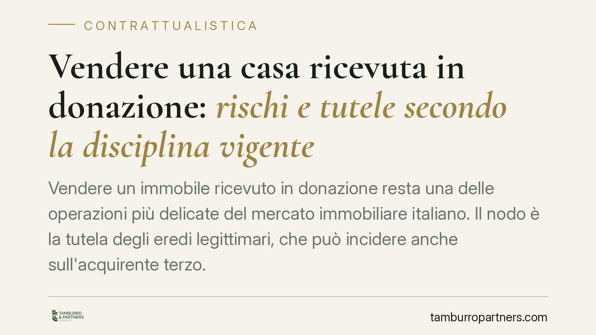
Vendere un immobile ricevuto in donazione resta una delle operazioni più delicate del mercato immobiliare italiano. Il nodo è la tutela degli eredi legittimari, che può incidere an…
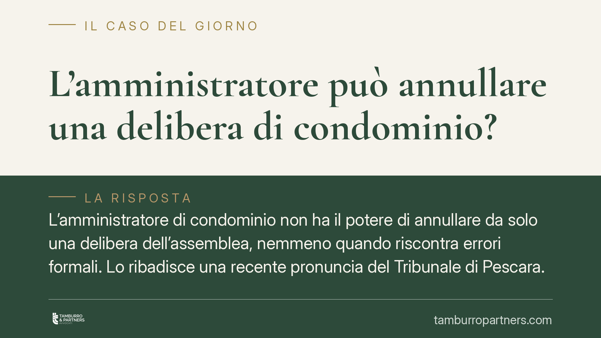
Una delibera assembleare presenta un errore. L'amministratore può disapplicarla o annullarla di sua iniziativa? No. Il suo compito è eseguire le decisioni dell'assemblea, non giudi…
La compravendita di un immobile con difformità edilizie non è automaticamente nulla. Le Sezioni Unite della Cassazione (sentenza n. 8230/2019) hanno chiarito che ciò che conta è la…
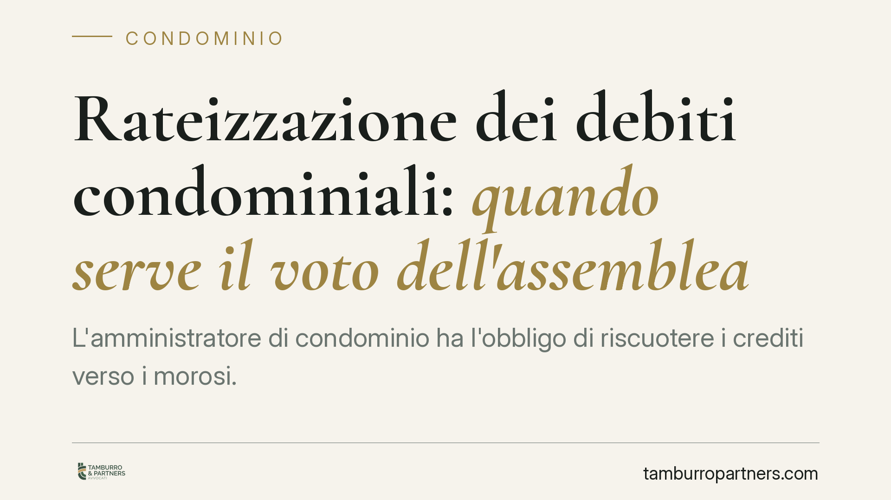
L'amministratore di condominio ha l'obbligo di riscuotere i crediti verso i morosi. Ma può concedere una rateizzazione senza passare dall'assemblea? La risposta dipende dal contenu…
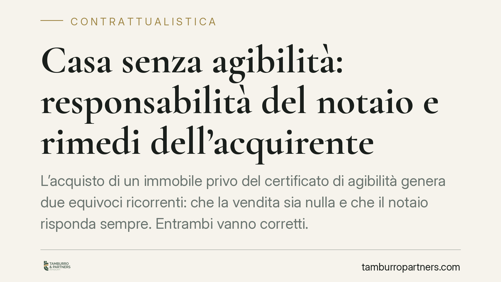
L'acquisto di un immobile privo del certificato di agibilità genera due equivoci ricorrenti: che la vendita sia nulla e che il notaio risponda sempre. Entrambi vanno corretti. La g…
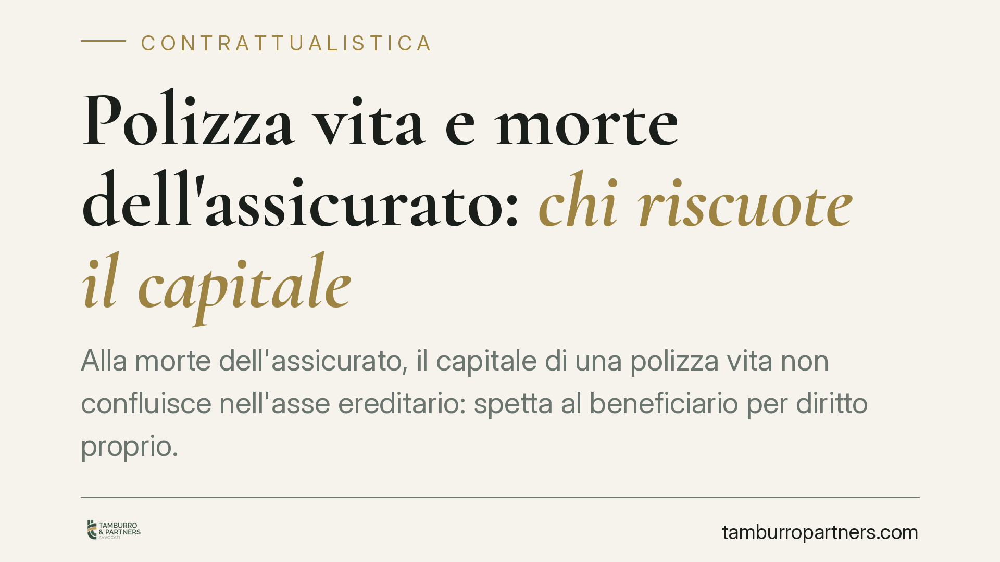
Alla morte dell'assicurato il capitale di una polizza vita non confluisce nell'asse ereditario: spetta direttamente al beneficiario, che vanta un diritto proprio e autonomo verso l…
La Cassazione torna sul rapporto tra carichi di lavoro e tutela della salute del dirigente. Anche chi non è soggetto a limiti orari ha diritto al risarcimento quando il cumulo di m…
La caparra confirmatoria è la clausola più diffusa nei preliminari immobiliari, ma la sua efficacia protettiva non è affatto automatica. La giurisprudenza recente ribadisce che il …
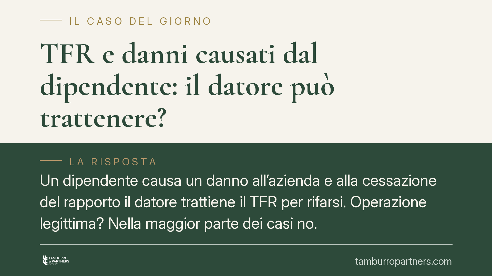
Un dipendente causa un danno all'azienda e alla cessazione del rapporto il datore trattiene il TFR per rifarsi. Operazione legittima? Nella maggior parte dei casi no. La compensazi…
L'installazione di un ascensore per persone con disabilità in condominio può prevalere anche su esigenze di decoro della facciata. Un orientamento consolidato della Cassazione rico…
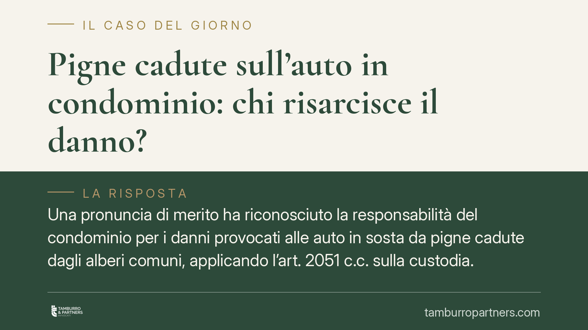
Una pronuncia di merito ha riconosciuto la responsabilità del condominio per i danni provocati alle auto in sosta da pigne cadute dagli alberi comuni, applicando l'art. 2051 c.c. s…
Al termine di un rapporto di lavoro tornano due domande ricorrenti: durante il preavviso maturano ancora ferie e tredicesima? La risposta dipende da una distinzione precisa tra pre…